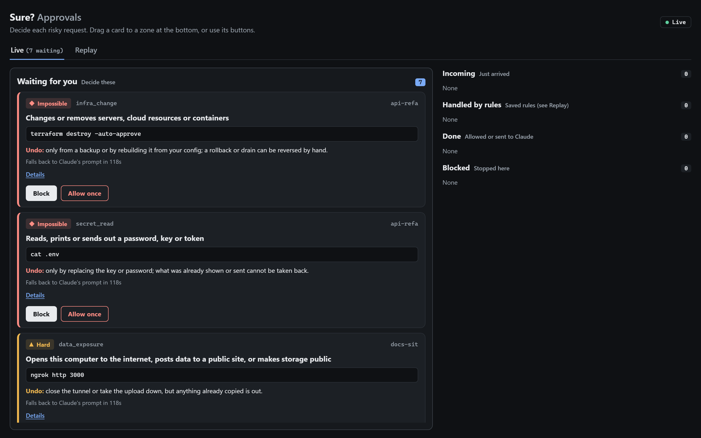
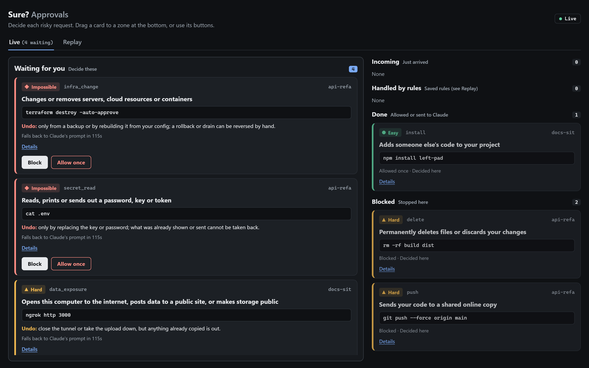
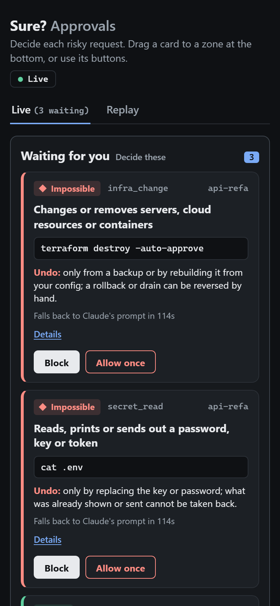

case study // developer tools // 2026
Sure?: plain-English safety cards for AI coding agents
AI coding agents run shell commands faster than anyone reads them. Sure? is a small local hook for Claude Code that stays quiet on safe actions and, before a risky one, shows a short card: what will happen, why it matters, what it costs and whether it can be undone. It is free, has no dependencies, and I tested it against a labelled corpus instead of trusting my own regexes.
First, what it is not
Sure? is not a sandbox and not a security boundary. It matches patterns in commands; it does not parse every shell, and anything running as the same user can tamper with it. It cannot see Claude opening a file with its Read tool (the README documents Claude Code's own deny rules for that gap), and if Sure? itself fails it stays silent and Claude's normal prompt applies, so it can never block the agent by breaking. It helps an owner who is paying attention. That limit is in the first paragraph of the README.
What a card looks like
The same four lines for every kind of risk, written for a person and not for a shell expert:
# Claude wants to run: rm -rf build dist WHAT: Permanently deletes files or discards your changes WHY IT MATTERS: Deleted files skip the recycle bin, and discarded changes are not saved anywhere. COST: Your work or project files could disappear. UNDO: Hard: only if the files were saved in git or a backup beforehand.

Every card carries a tier that says how bad a mistake would be, and the tier decides what you may do:
| tier | meaning | your options |
|---|---|---|
| easy | simple to reverse, like a package install | allow once, block, or always allow in that project |
| hard | reversible only with git or a backup | allow once or block |
| impossible | cannot be taken back, like a production destroy or a leaked key | block, or allow once with a second confirming click |
Try the classifier
Pick a command from Sure?'s own test corpus and see the card it prints. The cards are real output from the classifier, run on each command; nothing is executed. The corpus has 731 commands and 725 of them get the kind it expects. Five of the rest are documented gaps, and one compound command is labelled differently but still gets a card. These 49 were chosen to cover every kind and tier, plus one known gap.
How a decision is made
The optional board is a local web page (served on 127.0.0.1, locked down with a content-security policy and a per-session key) where each waiting card can be dragged to Block, Ask Claude or Allow once, with real buttons for keyboard and touch use.


How I made the rules trustworthy
A regex that looks right is not evidence. Each batch of rules went through the same gates:
- A labelled corpus. 640+ commands, each marked risky or safe, with look-alikes on both sides (
terraform plannext toterraform destroy,git commit -m "docs: never cat .env"next tocat .env). New rules are written test-first against it. - Old versus new. Every change is replayed through the previous rules on 1,500+ commands and file paths. The gate is zero lost cards and zero tiers lowered.
- A speed budget. Each new pattern must classify a 4,000-character hostile input in under 50 ms, because the hook runs before every tool call.
- An independent audit. A second model reviews the diff read-only and reports exact commands and results, not opinions.
Those gates caught real bugs, not hypothetical ones:
| found by | bug |
|---|---|
| old-vs-new replay | a case-sensitivity change silently dropped cards for AUTH.py and CREDENTIALS.json |
| speed budget | a timeout pattern backtracked exponentially and could stall the hook past its limit |
| audit | a git rm pattern was quadratic: 0.145 s on a 4,000-character input, three times over budget |
| audit | git commit -m "fix -n flag parsing" raised a safety-bypass card because a flag inside a quoted message was read as a flag |
| audit | npx @anthropic-ai/claude-code -p and ssh -R8080:... slipped past the first version of their rules |
Where it sits among similar tools
I read the READMEs of three open-source projects in the same space before settling on Sure?'s scope. They overlap, but they make different trade-offs:
| tool | approach | pick it when |
|---|---|---|
| Sure? | pattern rules as plain data, plain-English cards with an undo answer, a local approvals board | you want every risky action explained to a person, on Windows, with no dependencies |
| AgentTrail Guard | 74 pattern rules in 11 packs, per-rule allow lists, a transcript scan report | you want more rules today across Claude Code, Cursor and Codex |
| cc-safety-net | parses what a command actually does, with presets and cloud rulebooks, 17 coding CLIs | you want real shell parsing or many different agents |
| Cupcake | policy as code (OPA/Rego compiled to Wasm), allow, modify, block, warn or review | you want policy-as-code and enterprise controls |
Where Sure? is behind, and the README says so: the public repo covers Claude Code only, detection is pattern matching and not a parser, and it has no custom-rule test runner or transcript scan yet.
How it was built
Sure? was built with AI assistance (Claude Code and free models for mechanical work), and the process is the point: tests first, a different model family to critique, a stronger model to review, and a human deciding what ships. The rules are plain data in one JSON file, so a reader can audit what it flags without reading code. It is MIT licensed, and the repo includes a responsible-use note that asks users not to overstate what it protects against.
What this adds up to
Not "I built a security product." It is a small, honest tool with a clear scope, a way to measure whether it works, and a record of the bugs that measurement found. The interesting part is the discipline around the rules: label first, replay old against new, budget the speed, and let something else check the work. It also plugs into my own agent workbench: the same card now guards that agent's shell and file tools.
Questions about this? Email me or find me on LinkedIn.